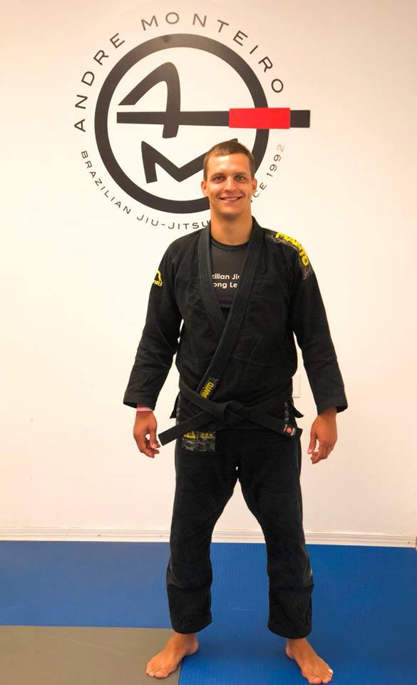

Rokas Naruševičius
Treneris

Lietuvos, Latvijos, Ukrainos, Anglijos BJJ čempionas
CBJJE Europos čempionas
CBJJE Europos no gi čempionas
IGF Grappling Europos čempionas
IGF Europos Grappling taurės čempionas (2 kartus)
Newbreed Ultimate Challenge no-gi (expert division) čempionas
English Open BJJ absoliutaus svorio čempionas
Newbreed Ultimate Challenge no-gi (expert division) čempionas
North American Grappling Association (NAGA) UK (expert division) čempionas
Daugkartinis IBJJF ir UAEJJF turnyrų nugalėtojas ir prizininkas
LGF išrinktas tarp geriausių metų sportininkų ir trenerių
Lietuvos Braziliškojo Jiu-Jitsu Asociacijos (LBJJA) prezidentas
United World Wrestling Pasaulio Grappling prizininkas 2018
United World Wrestling Pasaulio Grappling vicečempionas 2017